CSGO RushB中文网
CSGO RushB中文网
本文将教玩家制作如何制作自己的CSGO贴纸的基础方法（普通效果贴纸），并且在制作完成后在武器模型上预览贴纸效果。
注意，本文需要一定的PS基础，另外正常游戏中并不能使用自己的贴纸。
如果你已经知道如何制作普通贴纸，那么可以进入下一步：如何制作CSGO全息、闪亮、彩蛋贴纸
准备工具：
1、Photoshop
请自行百度下载
2、VTFEdit
百度网盘下载地址：https://pan.baidu.com/s/1tUrqXTrerRKHXxbwXO9JEA 提取码: kvey
VTFEdit需要.NET Framework v2.0和Visual C++ SP1才能运行，如果你的电脑没有，请在下方下载安装
32位系统
64位系统
3、CSGO SDK
可直接通过Steam下载，Steam客户端—库—工具，找到Counter-Strike Global Offensive – SDK，双击下载，注意，要和CSGO游戏客户端安装在同一路径。
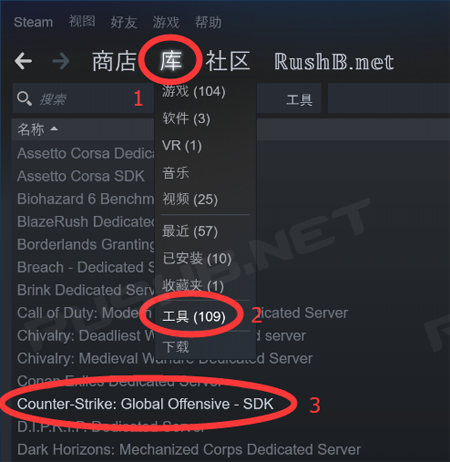
准备工作完成后，就可以开始制作贴纸/印花。
普通贴纸制作
打开Photoshop，新建文件，尺寸等设置如图
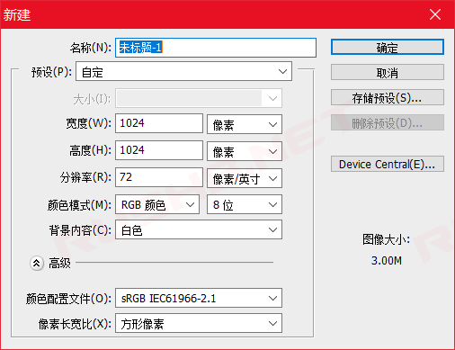
用你的PS技能设计贴纸图案，背景要透明，然后保存PSD文件（源文件）和JPG文件（用于创意工坊缩略图），以备之后再次使用或修改。由于站长我并非设计师，教程例子用的现成的素材制作。
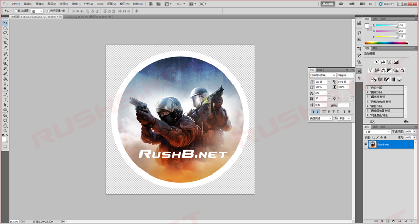
点击“文件”—“存储为Web和设备所用格式”，预设选“PNG-24”，勾选“透明度”，其他设置如图，点击“存储”，我这里命名rushb.png，得到一个PNG文件。
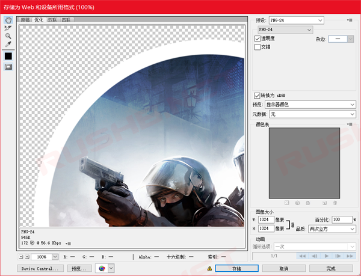
打开另一个工具VTFEdit，点击“File”——“Import”（导入），打开刚才保存好的PNG文件，然后会提示文件设置，不用改动，直接点击“OK”按钮。
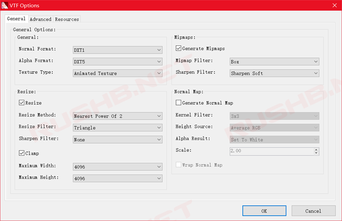
然后你会看到设计的图片，在左边栏的“Flags”，勾选“SRGB”、“No Mipmap”和“No Level Of Detail”，其他保持默认。
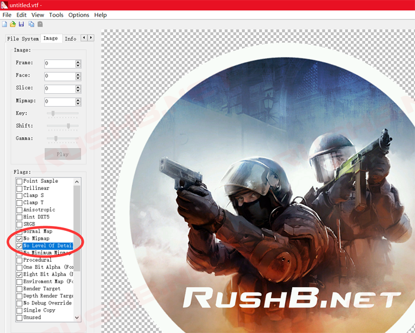
之后点击“File”——“Save”，命名并保存，这样你就得到游戏中使用的贴图VTF文件，这里我命名为rushb.vtf，为方便管理，在任意磁盘新建个“CSGOSticker”文件夹，将VTF复制到此处，同个文件夹内，新建文本文档（txt文件）并打开，粘贴以下代码：
WeaponDecal
{
$DECALSTYLE 1 //Paper-backed glossy sticker style
$basetexture
$unwearstrength 0.1
$envmap "env_cubemap"
$envmaptint "[ .07 .07 .07 ]"
$phong 1
$phongexponent 2
$phongfresnelranges "[ .2 .5 1 ]"
$phongalbedotint 1.0
$phongboost 1.0
$phongalbedoboost 10.0
}
将其中的$basetexture参数添加VTF文件路径，自定义路径格式为：
$basetexture "//./盘符/文件路径/vtf文件" 以我的路径为例：$basetexture "//./E:/CSGOTest/Sticker/rushb.vtf"
设置好后保存，然后将文本文件重命名为.vmt格式，最终文件和vmt内容如图：
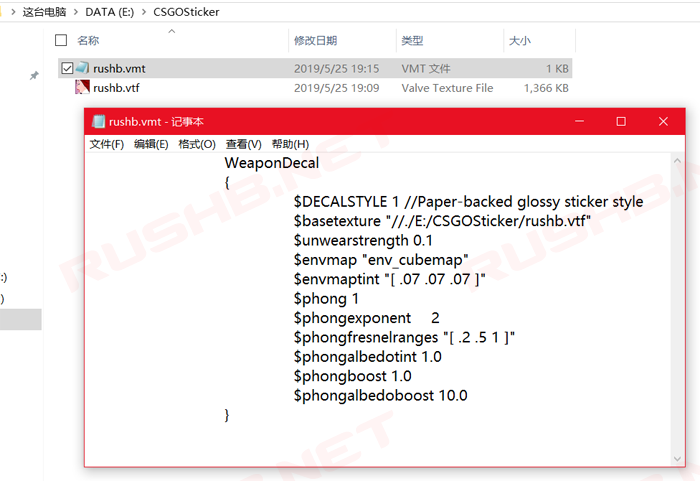
这样，基本的普通贴纸文件制作完成，其中VTF文件是游戏内贴图文件，而VMT则是属性文件。接下来，就让我们检查贴纸在武器模型上的实际效果。
贴纸预览
我们可以用开发工具CSGO SDK自带的贴纸预览功能，查看自己制作的贴纸。
打开工具CSGO SDK，然后双击“Model Viewer”
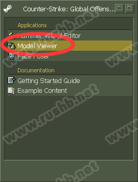
在Model Viewer程序中点击“File”——“Load Model…”，进入“sticker_preview”文件夹，选择要检视贴纸的武器模型，这里以P90“sticker_preview_smg_p90.mdl”为例。
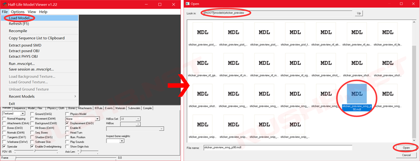
然后模型窗口会显示P90模型以及4个贴纸槽，在下面的设置框中，点击“Materials”，然后点击左边分别代表四个贴纸槽的“smg_p90_decal_a\b\c\d”，点击“Replace vmt”，打开之前做好的vmt文件，然后就可以看到贴纸被应用到模型上。
*在模型窗口中将鼠标放在模型上
- 按住左键并拖动可旋转模型
- 按住右键拖动可放大缩小
- Shift+左键可平移
- Ctrl+左键可改变光源方向
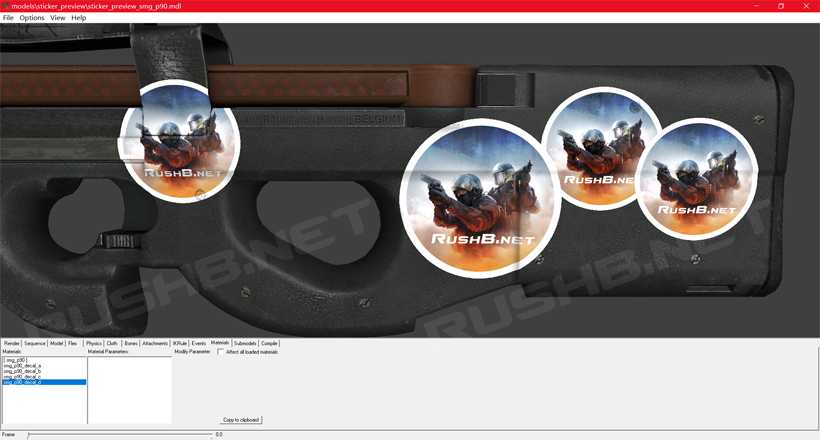
另外一种就是游戏内检视，不过需要现成的贴纸皮肤，以及修改代码，方法十分复杂，这里就不讲解了。
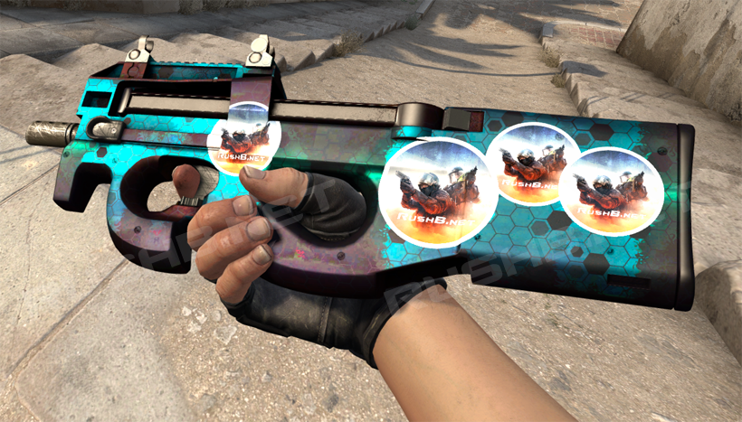
至此，基本普通效果贴纸（印花）制作和效果预览教程结束，后续的磨损贴纸（彩蛋贴纸）以及全息贴纸、闪亮贴纸的制作方法，还有如何上传CSGO创意工坊，请查看：
https://www.rushb.net/how-make-csgo-holo-foil-wear-sticker.html